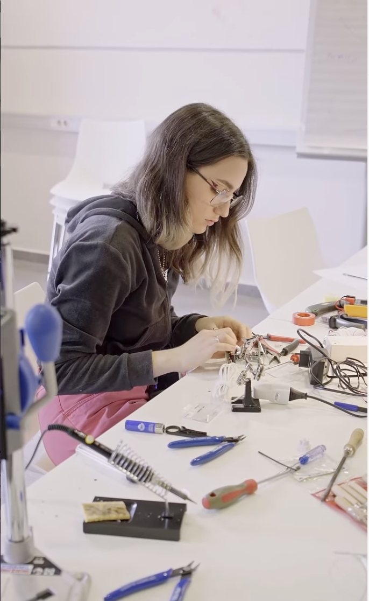

Diseñadora de interacción. Trabajo con luz, electrónica y espacio.

Soy Marta y vivo en Barcelona. Diseño y construyo instalaciones interactivas en las que la luz, el sonido y las personas se responden entre sí: desde la primera idea y los prototipos hasta la electrónica, la programación y el montaje.
Trabajo como diseñadora en Estudi Antoni Arola y desarrollo también proyectos propios y encargos técnicos.
Proyectos destacados
- 2025A Dialogue with Light — Karimoku Research Center, Tokio. Con Antoni Arola
- 2025Fiat Lux — festival Zaragoza Luce. Con Antoni Arola
- 2025no_res — instalación reactiva, BAU
- 2024Marisa — premio ei! al mejor proyecto de diseño de interacción
- 2023PUT* — exposición colectiva “307 persones en 558 m3”
- 2022Mural — Museu de Cera de Barcelona
Herramientas
ESP32 · Arduino · sensores · OSC · Resolume · Max MSP · proyección y láser · After Effects · Procreate
Formación
- 2025Máster en Innovación Audiovisual y Entornos Interactivos, BAU
- 2024Grado en Diseño, mención Interacción, ELISAVA